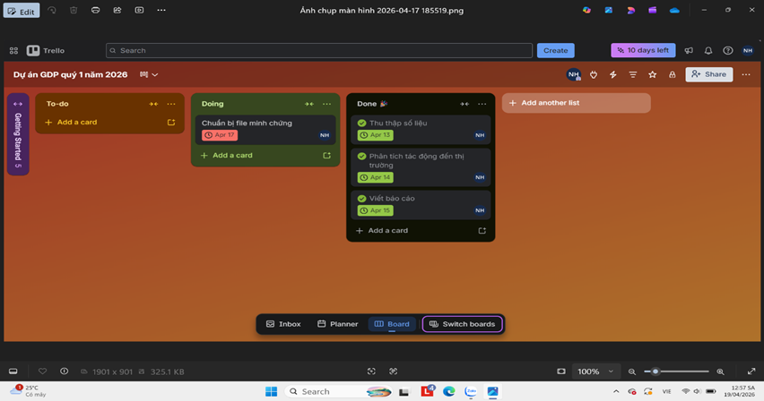
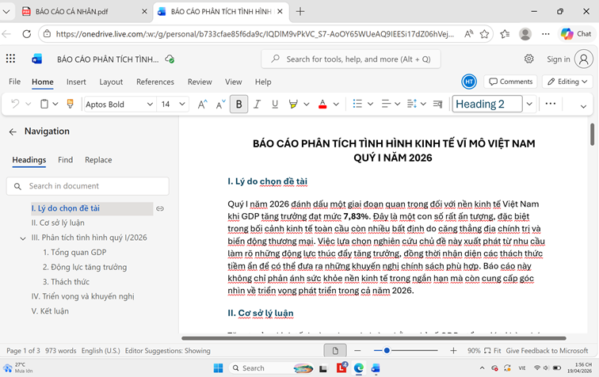
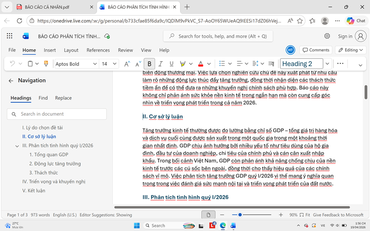
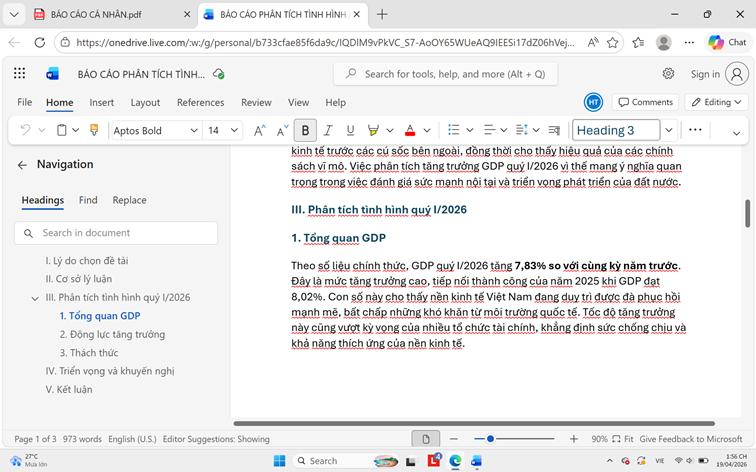
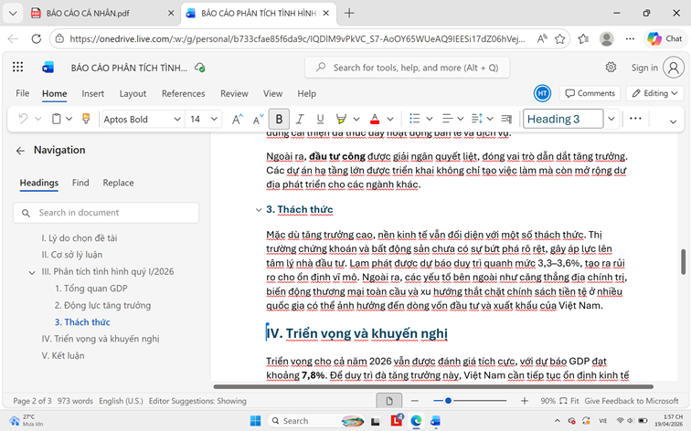
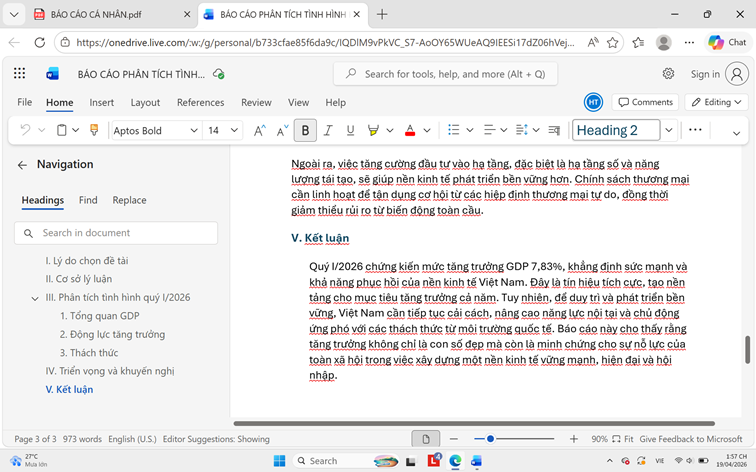
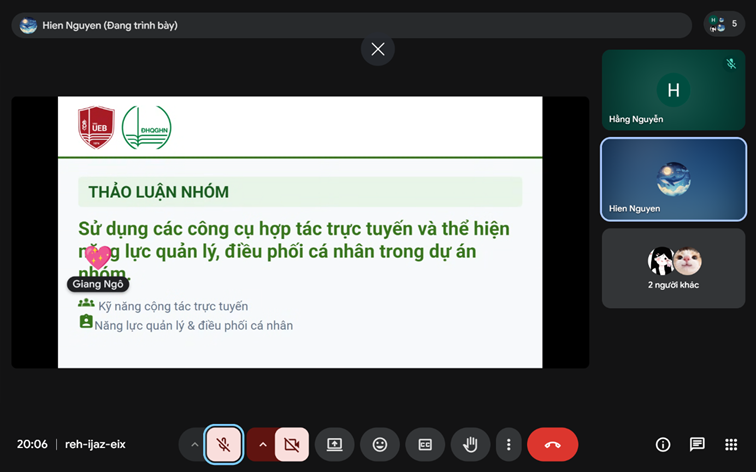
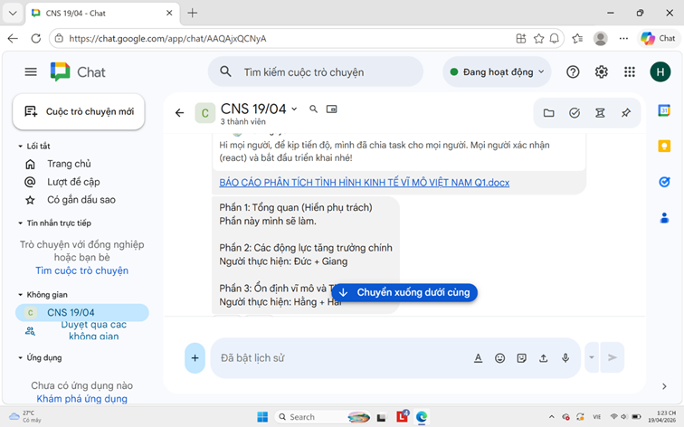

Thiết lập hệ sinh thái làm việc nhóm tích hợp với kanban và automations để giải quyết bài toán giao tiếp bất đồng bộ, nâng cao hiệu suất cộng tác.
Đề tài: Viết báo cáo nghiên cứu về tăng trưởng kinh tế việt nam quý I năm 2026.
Mục tiêu: Làm rõ các yếu tố thúc đẩy tăng trưởng, thách thức còn tồn tại, và triển vọng cho các quý tiếp theo.
- Công cụ quản lý dự án: Trello (phân công nhiệm vụ, theo dõi tiến độ).
- Công cụ giao tiếp nhóm: Google Meet, Google Chat (thảo luận, họp nhóm).
- Công cụ lưu trữ và chia sẻ tệp: OneDrive (lưu dữ liệu, biểu đồ, hình ảnh).
- Công cụ soạn thảo cộng tác: Microsoft Word (soạn thảo báo cáo, chỉnh sửa trực tuyến).
-Sử dụng công cụ trello: : tạo thẻ công việc theo mốc thời gian (thu thập số liệu, phân tích, viết báo cáo, chỉnh sửa). Theo dõi tiến độ, cập nhật trạng thái công việc và đảm bảo tiến độ hoàn thành.

-Sử dụng công cụ Word:các thành viên cùng soạn thảo báo cáo, nhận xét và chỉnh sửa nội dung theo thời gian thực.





- Google Meet, Google Chat: trao đổi, phân công nhiệm vụ nhóm, tiếp nhận phản hồi từ các thành viên.


- Sử dụng công cụ One drive: Tài liệu, dữ liệu và hình ảnh minh họa được lưu trữ tập trung trong Google Drive, được sắp xếp thành các thư mục con như:
+Tài liệu nghiên cứu
+Hình ảnh minh họa
Các tệp được tổ chức theo cấu trúc logic và phân quyền cho tất cả thành viên, giúp việc truy cập, chỉnh sửa và theo dõi dễ dàng.
| Công cụ | Ưu điểm | Hạn chế | Cách khắc phục |
|---|---|---|---|
| Trello | Quản lý trực quan bằng Kanban, dễ phân công và theo dõi tiến độ. | Cần mạng ổn định để đồng bộ thời gian thực. | Kiểm tra kết nối mạng trước khi họp nhóm. |
| MS Word | Định dạng văn bản chuyên nghiệp, dễ in ấn. | Dễ xung đột nội dung, lỗi ghi đè dữ liệu. | Phân chia rõ phần việc, dùng chế độ "Đề xuất". |
| OneDrive | Tích hợp sâu với hệ sinh thái Windows và Office. | Dung lượng miễn phí giới hạn (5GB), đồng bộ file lớn chậm. | Sử dụng "Files On-Demand" để tiết kiệm dung lượng ổ cứng. |
| Google Chat | Trao đổi nhanh, thảo luận ý tưởng tức thời. | Nội dung dễ bị trôi, khó lưu trữ lâu dài. | Tạo kênh riêng theo chủ đề, lưu file lên OneDrive. |
| Google Meet | Họp trực tuyến ổn định, chia sẻ màn hình tốt. | Bản miễn phí bị giới hạn thời gian họp. | Chuẩn bị kỹ tài liệu để họp ngắn gọn, hiệu quả. |
Trong quá trình triển khai dự án, nhóm đã đối mặt với một số trở ngại thực tế trong việc phối hợp. Tuy nhiên, bằng cách phân tích và áp dụng các giải pháp cụ thể, nhóm đã vượt qua các thách thức này một cách hiệu quả:
- Khó đồng bộ lịch họp: Các thành viên có lịch trình cá nhân khác nhau, gây khó khăn trong việc sắp xếp thời gian họp.
- Xung đột nội dung: Khi nhiều người cùng chỉnh sửa tài liệu, dễ xảy ra tình trạng ghi đè hoặc trùng lặp ý tưởng.
- Phân mảnh dữ liệu: Nhiệm vụ quản lý trên Trello, tài liệu lưu ở OneDrive, trong khi thảo luận lại diễn ra trên Google Chat/Meet, đôi khi gây chậm trễ khi cần truy xuất thông tin.
- Giới hạn công cụ miễn phí: Một số công cụ như Google Meet hoặc OneDrive có giới hạn dung lượng/thời gian, ảnh hưởng đến tiến độ làm việc.
- Thống nhất lịch họp cố định: Nhóm nên chọn một khung giờ cố định hàng tuần để tạo thói quen làm việc và đảm bảo sự tham gia đầy đủ.
- Phân công rõ ràng: Trước khi viết báo cáo, cần phân chia trách nhiệm cụ thể cho từng thành viên để tránh chồng chéo.
- Tích hợp công cụ: Liên kết tài liệu OneDrive trực tiếp vào thẻ Trello để truy cập nhanh chóng, giảm phân mảnh dữ liệu.
- Tận dụng tính năng nâng cao: Sử dụng chế độ “Đề xuất” trong Word khi cộng tác, hoặc nâng cấp gói dịch vụ khi nhóm thường xuyên cần dung lượng/ thời gian lớn hơn.
- Lưu trữ nội dung quan trọng: Các trao đổi trên Google Chat nên được tóm tắt và lưu lại trong OneDrive để dễ dàng tham khảo sau này.
Việc quyết định áp dụng một bộ công cụ hợp tác trực tuyến chuyên dụng đã chứng minh là một chiến lược then chốt, mang lại những kết quả vượt trội cho dự án:
Việc sử dụng các nền tảng này không chỉ đơn thuần là số hóa công việc, mà còn giúp nhóm quản lý dự án một cách khoa học, tiết kiệm đáng kể thời gian cho việc di chuyển hay chờ đợi phản hồi, và quan trọng nhất là cải thiện rõ rệt năng suất làm việc của từng cá nhân.
Việc ứng dụng các nền tảng quản trị dự án trực tuyến loại bỏ hoàn toàn tình trạng mất đồng bộ thông tin thường gặp ở các nhóm sinh viên. Bảng Kanban mang lại sự minh bạch hóa tuyệt đối: Ai đang làm gì, ở giai đoạn nào, và khi nào hoàn thành đều được hiển thị trực quan theo thời gian thực.